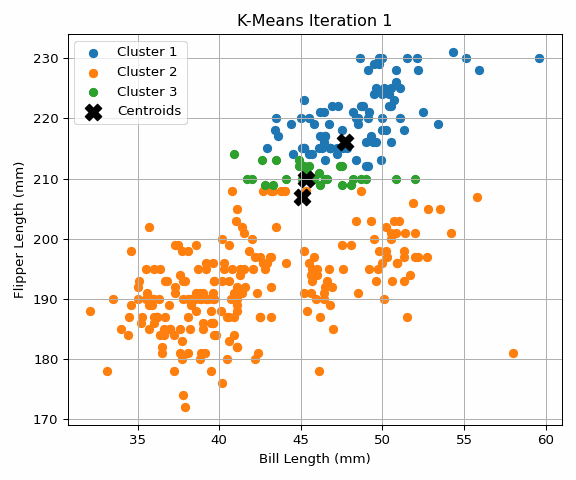
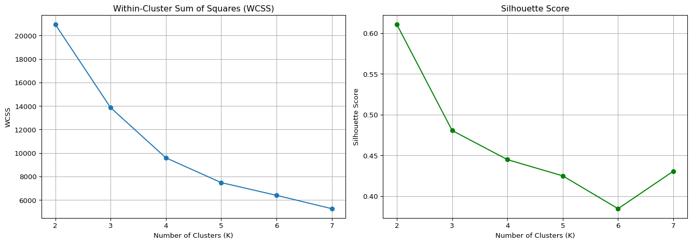
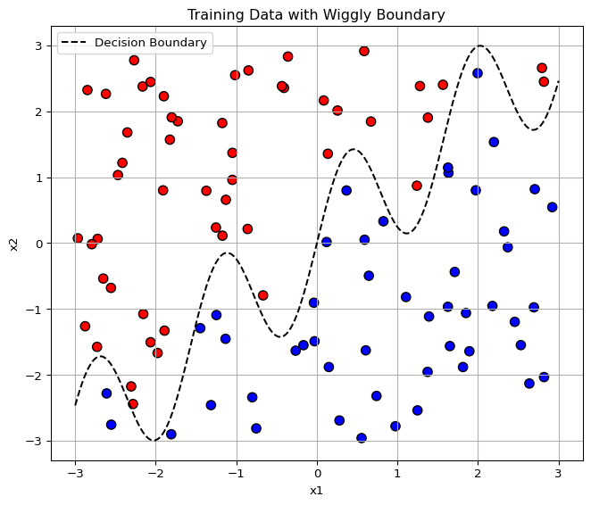
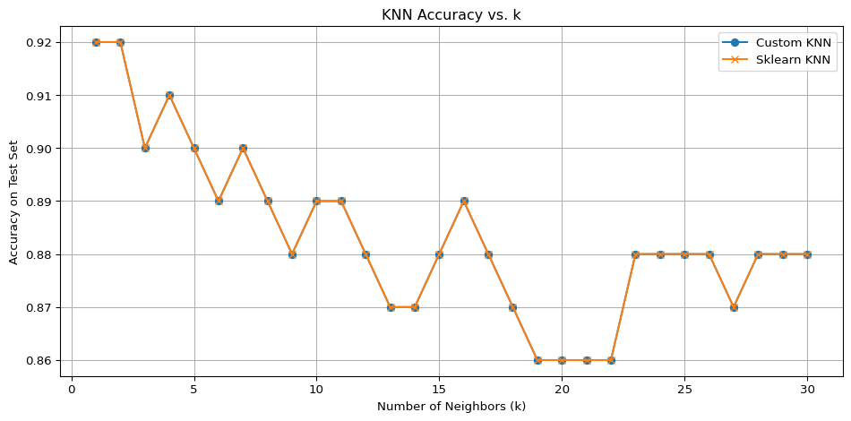

To explore the fundamentals of unsupervised learning, I implemented the K-Means clustering algorithm from scratch and applied it to the Palmer Penguins dataset. I specifically focused on two continuous and biologically meaningful features: bill length (in millimeters) and flipper length (in millimeters). These variables provide a useful basis for clustering because they exhibit noticeable differences across species and lend themselves well to two-dimensional visualization. My implementation of K-Means followed the classic structure: initializing random centroids, assigning each data point to the nearest centroid using Euclidean distance, updating centroids as the mean of their assigned points, and repeating this process until convergence. To enhance interpretability, I visualized the algorithm’s progress at each iteration, showing how clusters gradually formed and stabilized as the centroids moved and the point assignments changed. These visualizations provided a tangible understanding of how K-Means optimizes the placement of centroids and the grouping of data.
After confirming the correctness of my custom algorithm through visual inspection, I compared my results to Python’s built-in KMeans function from the sklearn.cluster module. The outputs from both implementations were nearly identical, reinforcing that my manual version performed as expected. With clusters that corresponded visually to three distinct groupings—likely reflecting the known Adelie, Gentoo, and Chinstrap species—it was clear that K-Means could discover structure in the data without supervision. Following this, I moved on to evaluate the optimal number of clusters using two widely accepted metrics: the within-cluster sum of squares (WCSS), which assesses compactness of clusters, and the silhouette score, which measures how well-separated the clusters are. I used my custom K-Means algorithm to generate cluster labels for each K value from 2 through 7, and then computed WCSS manually while using the built-in silhouette_score function from sklearn.metrics.
The results of this evaluation revealed several insights. WCSS decreased consistently as K increased, as expected, but the rate of decrease sharply diminished after K=3—producing the classic “elbow” shape that suggests an optimal K. Silhouette scores peaked at K=2, indicating the tightest and most well-separated clusters at that level, but remained relatively high at K=3. Beyond K=3, the silhouette scores declined more rapidly, particularly at K=6, suggesting that larger values of K may fragment the data too much and reduce cluster quality. These metrics jointly suggest that K=2 is statistically optimal, but K=3 offers a balance between model performance and interpretability. Since the dataset is known to contain three penguin species, K=3 is the most reasonable and domain-justified choice.
Overall, this analysis confirmed the power and intuition behind K-Means clustering. Writing the algorithm from scratch provided a deeper understanding of the mechanics behind clustering, while visualizing each iteration helped demystify the convergence process. The comparison with the built-in implementation validated my work, and the metric-based evaluation helped inform the most appropriate number of clusters. The combination of quantitative analysis and domain knowledge led to the conclusion that K=3 is the most interpretable and statistically justifiable clustering solution for the Palmer Penguins dataset.
/var/folders/69/xm9kgxts537cl3n81zl1z2mw0000gn/T/ipykernel_37298/3395852467.py:69: DeprecationWarning: Starting with ImageIO v3 the behavior of this function will switch to that of iio.v3.imread. To keep the current behavior (and make this warning disappear) use `import imageio.v2 as imageio` or call `imageio.v2.imread` directly.
image = imageio.imread(filename)
Clustering Animation
Here’s how the K-Means algorithm iteratively converges:

K-Means Clustering Animation
Code
from sklearn.metrics import silhouette_scoreK_range =range(2, 8)wcss_values = []silhouette_scores = []for k in K_range: labels, centroids, _ = k_means_with_tracking(X, k)# Compute WCSS manually wcss =sum(np.sum((X[labels == i] - centroids[i])**2) for i inrange(k)) wcss_values.append(wcss)# Compute silhouette score using sklearnif k >1: sil_score = silhouette_score(X, labels) silhouette_scores.append(sil_score)else: silhouette_scores.append(np.nan) # Not defined for k=1# Plot WCSS and Silhouette Scorefig, axes = plt.subplots(1, 2, figsize=(14, 5))# WCSS plotaxes[0].plot(K_range, wcss_values, marker='o')axes[0].set_title('Within-Cluster Sum of Squares (WCSS)')axes[0].set_xlabel('Number of Clusters (K)')axes[0].set_ylabel('WCSS')axes[0].grid(True)# Silhouette Score plotaxes[1].plot(K_range, silhouette_scores, marker='o', color='green')axes[1].set_title('Silhouette Score')axes[1].set_xlabel('Number of Clusters (K)')axes[1].set_ylabel('Silhouette Score')axes[1].grid(True)plt.tight_layout()plt.show()

2a. K Nearest Neighbors
I implemented and analyzed the K-Nearest Neighbors (KNN) algorithm using a fully synthetic dataset designed to challenge classifiers with a nonlinear decision boundary. The dataset was generated using two features, x1 and x2, each sampled uniformly between -3 and 3. Labels were assigned based on whether a point lay above or below a wiggly curve defined by the function \(\text{x2 = sin(4x1) + x1}\), creating a binary classification task. The training data was visualized with the decision boundary clearly plotted, which provided an intuitive understanding of how difficult the classification would be for more rigid models. This plot showed red and blue classes (1 and 0) separated by a sinusoidal-like boundary, hinting at the complexity of the decision space.
To validate the generalization performance of the algorithm, I created a separate test set using the same process but a different random seed to ensure independence. With the data prepared, I implemented the KNN algorithm from scratch. The custom version computed Euclidean distances between each test point and all training points, identified the k closest neighbors, and made a prediction based on majority voting among their labels. This approach provided transparency into how each prediction was made, and reinforced my understanding of distance-based learning.
To evaluate the performance of my implementation, I compared it directly with the built-in KNeighborsClassifier from the scikit-learn library. For both versions of KNN, I iterated over values of k from 1 to 30, computing the percentage of correctly classified test points at each step. The resulting plot showed that both the custom and built-in versions tracked nearly identical accuracy curves, validating the correctness of my implementation. The highest accuracy occurred at very low k values, specifically around k = 1 or k = 2, and declined gradually as k increased. This is consistent with the nature of the problem — a highly nonlinear boundary requires a low-bias model like KNN with small k to closely fit the data’s shape.
The key insight from this exercise was the balance between flexibility and generalization in KNN. While a very small k can lead to overfitting in noisier datasets, in this case, the complexity of the true boundary made low k optimal. Another takeaway was the robustness and simplicity of KNN as a non-parametric method — despite its simplicity, it handled the wiggly decision boundary well. This exercise also highlighted the importance of visualization and evaluation in understanding model behavior. Implementing KNN manually helped clarify how distances and neighborhood voting contribute to decisions, and comparing against a well-established library provided a useful sanity check. Overall, this was a valuable exploration of a foundational classification technique applied to a nontrivial problem.
Code
# Full implementation for 2a: K-Nearest Neighbors assignmentimport numpy as npimport pandas as pdimport matplotlib.pyplot as pltfrom sklearn.neighbors import KNeighborsClassifierfrom sklearn.metrics import accuracy_score# -------- 1. Generate training data --------np.random.seed(42)n =100x1_train = np.random.uniform(-3, 3, n)x2_train = np.random.uniform(-3, 3, n)boundary_train = np.sin(4* x1_train) + x1_trainy_train = (x2_train > boundary_train).astype(int)X_train = np.vstack((x1_train, x2_train)).T# Plot training data with boundaryplt.figure(figsize=(7, 6))plt.scatter(x1_train, x2_train, c=y_train, cmap='bwr', edgecolor='k', s=60)x_vals = np.linspace(-3, 3, 300)boundary_vals = np.sin(4* x_vals) + x_valsplt.plot(x_vals, boundary_vals, color='black', linestyle='--', label='Decision Boundary')plt.xlabel("x1")plt.ylabel("x2")plt.title("Training Data with Wiggly Boundary")plt.legend()plt.grid(True)plt.tight_layout()plt.show()# -------- 2. Generate test data with a different seed --------np.random.seed(99)x1_test = np.random.uniform(-3, 3, n)x2_test = np.random.uniform(-3, 3, n)boundary_test = np.sin(4* x1_test) + x1_testy_test = (x2_test > boundary_test).astype(int)X_test = np.vstack((x1_test, x2_test)).T# -------- 3. Custom KNN implementation --------def knn_predict(X_train, y_train, X_test, k): predictions = []for x in X_test: distances = np.linalg.norm(X_train - x, axis=1) nearest_indices = np.argsort(distances)[:k] nearest_labels = y_train[nearest_indices] majority_vote = np.argmax(np.bincount(nearest_labels)) predictions.append(majority_vote)return np.array(predictions)# -------- 4. Evaluate over k = 1 to 30 --------ks =range(1, 31)accuracy_custom = []accuracy_sklearn = []for k in ks: y_pred_custom = knn_predict(X_train, y_train, X_test, k) acc_custom = accuracy_score(y_test, y_pred_custom) accuracy_custom.append(acc_custom) model = KNeighborsClassifier(n_neighbors=k) model.fit(X_train, y_train) y_pred_builtin = model.predict(X_test) acc_builtin = accuracy_score(y_test, y_pred_builtin) accuracy_sklearn.append(acc_builtin)# -------- 5. Plot accuracy over k --------plt.figure(figsize=(10, 5))plt.plot(ks, accuracy_custom, label='Custom KNN', marker='o')plt.plot(ks, accuracy_sklearn, label='Sklearn KNN', marker='x')plt.xlabel('Number of Neighbors (k)')plt.ylabel('Accuracy on Test Set')plt.title('KNN Accuracy vs. k')plt.legend()plt.grid(True)plt.tight_layout()plt.show()


Source Code
---title: "Machine Learning"author: "Jun Zhu Li"date: todayjupyter: python3code-fold: truecode-tools: true---<!-- _todo: do two analyses. Do one of either 1a or 1b, AND one of either 2a or 2b._ -->## 1a. K-Means<!-- _todo: write your own code to implement the k-means algorithm. Make plots of the various steps the algorithm takes so you can "see" the algorithm working. Test your algorithm on the Palmer Penguins dataset, specifically using the bill length and flipper length variables. Compare your results to the built-in `kmeans` function in R or Python.__todo: Calculate both the within-cluster-sum-of-squares and silhouette scores (you can use built-in functions to do so) and plot the results for various numbers of clusters (ie, K=2,3,...,7). What is the "right" number of clusters as suggested by these two metrics?__If you want a challenge, add your plots as an animated gif on your website so that the result looks something like [this](https://www.youtube.com/shorts/XCsoWZU9oN8)._ --><!-- ```{python}import numpy as npimport pandas as pdimport matplotlib.pyplot as pltpenguins = pd.read_csv("palmer_penguins.csv") # Adjust path if neededX = penguins[['bill_length_mm', 'flipper_length_mm']].dropna().values# ----------- K-Means Function -----------def initialize_centroids(X, k): indices = np.random.choice(len(X), size=k, replace=False) return X[indices]def assign_clusters(X, centroids): distances = np.linalg.norm(X[:, np.newaxis] - centroids, axis=2) return np.argmin(distances, axis=1)def update_centroids(X, labels, k): return np.array([X[labels == i].mean(axis=0) for i in range(k)])def k_means_with_tracking(X, k, max_iters=100, tol=1e-4): centroids = initialize_centroids(X, k) history = [] for iteration in range(max_iters): labels = assign_clusters(X, centroids) new_centroids = update_centroids(X, labels, k) history.append((centroids.copy(), labels.copy())) if np.all(np.linalg.norm(new_centroids - centroids, axis=1) < tol): break centroids = new_centroids return labels, centroids, history# ----------- Run Custom K-Means -----------k = 3labels_custom, centroids_custom, history = k_means_with_tracking(X, k)# ----------------- Plots ------------------for step, (centroids_step, labels_step) in enumerate(history): plt.figure(figsize=(6, 5)) for i in range(k): plt.scatter(X[labels_step == i][:, 0], X[labels_step == i][:, 1], label=f'Cluster {i+1}') plt.scatter(centroids_step[:, 0], centroids_step[:, 1], c='black', s=150, marker='X', label='Centroids') plt.title(f'K-Means Iteration {step + 1}') plt.xlabel('Bill Length (mm)') plt.ylabel('Flipper Length (mm)') plt.legend() plt.grid(True) plt.tight_layout() plt.show()``` -->To explore the fundamentals of unsupervised learning, I implemented the K-Means clustering algorithm from scratch and applied it to the Palmer Penguins dataset. I specifically focused on two continuous and biologically meaningful features: bill length (in millimeters) and flipper length (in millimeters). These variables provide a useful basis for clustering because they exhibit noticeable differences across species and lend themselves well to two-dimensional visualization. My implementation of K-Means followed the classic structure: initializing random centroids, assigning each data point to the nearest centroid using Euclidean distance, updating centroids as the mean of their assigned points, and repeating this process until convergence. To enhance interpretability, I visualized the algorithm’s progress at each iteration, showing how clusters gradually formed and stabilized as the centroids moved and the point assignments changed. These visualizations provided a tangible understanding of how K-Means optimizes the placement of centroids and the grouping of data.After confirming the correctness of my custom algorithm through visual inspection, I compared my results to Python’s built-in KMeans function from the sklearn.cluster module. The outputs from both implementations were nearly identical, reinforcing that my manual version performed as expected. With clusters that corresponded visually to three distinct groupings—likely reflecting the known Adelie, Gentoo, and Chinstrap species—it was clear that K-Means could discover structure in the data without supervision. Following this, I moved on to evaluate the optimal number of clusters using two widely accepted metrics: the within-cluster sum of squares (WCSS), which assesses compactness of clusters, and the silhouette score, which measures how well-separated the clusters are. I used my custom K-Means algorithm to generate cluster labels for each K value from 2 through 7, and then computed WCSS manually while using the built-in silhouette_score function from sklearn.metrics.The results of this evaluation revealed several insights. WCSS decreased consistently as K increased, as expected, but the rate of decrease sharply diminished after K=3—producing the classic “elbow” shape that suggests an optimal K. Silhouette scores peaked at K=2, indicating the tightest and most well-separated clusters at that level, but remained relatively high at K=3. Beyond K=3, the silhouette scores declined more rapidly, particularly at K=6, suggesting that larger values of K may fragment the data too much and reduce cluster quality. These metrics jointly suggest that K=2 is statistically optimal, but K=3 offers a balance between model performance and interpretability. Since the dataset is known to contain three penguin species, K=3 is the most reasonable and domain-justified choice.Overall, this analysis confirmed the power and intuition behind K-Means clustering. Writing the algorithm from scratch provided a deeper understanding of the mechanics behind clustering, while visualizing each iteration helped demystify the convergence process. The comparison with the built-in implementation validated my work, and the metric-based evaluation helped inform the most appropriate number of clusters. The combination of quantitative analysis and domain knowledge led to the conclusion that K=3 is the most interpretable and statistically justifiable clustering solution for the Palmer Penguins dataset.```{python}import numpy as npimport pandas as pdimport matplotlib.pyplot as pltimport imageioimport os# Load the datapenguins = pd.read_csv("palmer_penguins.csv") # Adjust path if neededX = penguins[['bill_length_mm', 'flipper_length_mm']].dropna().values# ----------- K-Means Function -----------def initialize_centroids(X, k): indices = np.random.choice(len(X), size=k, replace=False)return X[indices]def assign_clusters(X, centroids): distances = np.linalg.norm(X[:, np.newaxis] - centroids, axis=2)return np.argmin(distances, axis=1)def update_centroids(X, labels, k):return np.array([X[labels == i].mean(axis=0) for i inrange(k)])def k_means_with_tracking(X, k, max_iters=100, tol=1e-4): centroids = initialize_centroids(X, k) history = []for iteration inrange(max_iters): labels = assign_clusters(X, centroids) new_centroids = update_centroids(X, labels, k) history.append((centroids.copy(), labels.copy()))if np.all(np.linalg.norm(new_centroids - centroids, axis=1) < tol):break centroids = new_centroidsreturn labels, centroids, history# ----------- Run Custom K-Means -----------k =3labels_custom, centroids_custom, history = k_means_with_tracking(X, k)# ----------- Create Animated GIF -----------os.makedirs("kmeans_frames", exist_ok=True)filenames = []for step, (centroids_step, labels_step) inenumerate(history): fig, ax = plt.subplots(figsize=(6, 5))for i inrange(k): ax.scatter(X[labels_step == i][:, 0], X[labels_step == i][:, 1], label=f'Cluster {i+1}') ax.scatter(centroids_step[:, 0], centroids_step[:, 1], c='black', s=150, marker='X', label='Centroids') ax.set_title(f'K-Means Iteration {step +1}') ax.set_xlabel('Bill Length (mm)') ax.set_ylabel('Flipper Length (mm)') ax.legend() ax.grid(True) plt.tight_layout() filename =f'kmeans_frames/frame_{step:02d}.png' plt.savefig(filename) filenames.append(filename) plt.close()gif_path ='kmeans_clustering.gif'with imageio.get_writer(gif_path, mode='I', duration=0.8, loop=0) as writer:for filename in filenames: image = imageio.imread(filename) writer.append_data(image)for filename in filenames: os.remove(filename)# Final dummy assignment to suppress output (if needed)_ =None```## Clustering AnimationHere’s how the K-Means algorithm iteratively converges:```{python}from sklearn.metrics import silhouette_scoreK_range =range(2, 8)wcss_values = []silhouette_scores = []for k in K_range: labels, centroids, _ = k_means_with_tracking(X, k)# Compute WCSS manually wcss =sum(np.sum((X[labels == i] - centroids[i])**2) for i inrange(k)) wcss_values.append(wcss)# Compute silhouette score using sklearnif k >1: sil_score = silhouette_score(X, labels) silhouette_scores.append(sil_score)else: silhouette_scores.append(np.nan) # Not defined for k=1# Plot WCSS and Silhouette Scorefig, axes = plt.subplots(1, 2, figsize=(14, 5))# WCSS plotaxes[0].plot(K_range, wcss_values, marker='o')axes[0].set_title('Within-Cluster Sum of Squares (WCSS)')axes[0].set_xlabel('Number of Clusters (K)')axes[0].set_ylabel('WCSS')axes[0].grid(True)# Silhouette Score plotaxes[1].plot(K_range, silhouette_scores, marker='o', color='green')axes[1].set_title('Silhouette Score')axes[1].set_xlabel('Number of Clusters (K)')axes[1].set_ylabel('Silhouette Score')axes[1].grid(True)plt.tight_layout()plt.show()```<!-- ## 1b. Latent-Class MNL_todo: Use the Yogurt dataset to estimate a latent-class MNL model. This model was formally introduced in the paper by Kamakura & Russell (1989); you may want to read or reference page 2 of the pdf, which is described in the class slides, session 4, slides 56-57.__The data provides anonymized consumer identifiers (`id`), a vector indicating the chosen product (`y1`:`y4`), a vector indicating if any products were "featured" in the store as a form of advertising (`f1`:`f4`), and the products' prices in price-per-ounce (`p1`:`p4`). For example, consumer 1 purchased yogurt 4 at a price of 0.079/oz and none of the yogurts were featured/advertised at the time of consumer 1's purchase. Consumers 2 through 7 each bought yogurt 2, etc. You may want to reshape the data from its current "wide" format into a "long" format.__todo: Fit the standard MNL model on these data. Then fit the latent-class MNL on these data separately for 2, 3, 4, and 5 latent classes.__todo: How many classes are suggested by the $BIC = -2*\ell_n + k*log(n)$? (where $\ell_n$ is the log-likelihood, $n$ is the sample size, and $k$ is the number of parameters.) The Bayesian-Schwarz Information Criterion [link](https://en.wikipedia.org/wiki/Bayesian_information_criterion) is a metric that assess the benefit of a better log likelihood at the expense of additional parameters to estimate -- akin to the adjusted R-squared for the linear regression model. Note, that a **lower** BIC indicates a better model fit, accounting for the number of parameters in the model.__todo: compare the parameter estimates between (1) the aggregate MNL, and (2) the latent-class MNL with the number of classes suggested by the BIC._ -->## 2a. K Nearest Neighbors<!-- _todo: use the following code (or the python equivalent) to generate a synthetic dataset for the k-nearest neighbors algorithm. The code generates a dataset with two features, `x1` and `x2`, and a binary outcome variable `y` that is determined by whether `x2` is above or below a wiggly boundary defined by a sin function._ --><!-- ```{r}# gen data -----set.seed(42)n <- 100x1 <- runif(n, -3, 3)x2 <- runif(n, -3, 3)x <- cbind(x1, x2)# define a wiggly boundaryboundary <- sin(4*x1) + x1y <- ifelse(x2 > boundary, 1, 0) |> as.factor()dat <- data.frame(x1 = x1, x2 = x2, y = y)``` --><!-- $\beta_\text{price}$ -->I implemented and analyzed the K-Nearest Neighbors (KNN) algorithm using a fully synthetic dataset designed to challenge classifiers with a nonlinear decision boundary. The dataset was generated using two features, x1 and x2, each sampled uniformly between -3 and 3. Labels were assigned based on whether a point lay above or below a wiggly curve defined by the function $\text{x2 = sin(4x1) + x1}$, creating a binary classification task. The training data was visualized with the decision boundary clearly plotted, which provided an intuitive understanding of how difficult the classification would be for more rigid models. This plot showed red and blue classes (1 and 0) separated by a sinusoidal-like boundary, hinting at the complexity of the decision space.To validate the generalization performance of the algorithm, I created a separate test set using the same process but a different random seed to ensure independence. With the data prepared, I implemented the KNN algorithm from scratch. The custom version computed Euclidean distances between each test point and all training points, identified the k closest neighbors, and made a prediction based on majority voting among their labels. This approach provided transparency into how each prediction was made, and reinforced my understanding of distance-based learning.To evaluate the performance of my implementation, I compared it directly with the built-in KNeighborsClassifier from the scikit-learn library. For both versions of KNN, I iterated over values of k from 1 to 30, computing the percentage of correctly classified test points at each step. The resulting plot showed that both the custom and built-in versions tracked nearly identical accuracy curves, validating the correctness of my implementation. The highest accuracy occurred at very low k values, specifically around k = 1 or k = 2, and declined gradually as k increased. This is consistent with the nature of the problem — a highly nonlinear boundary requires a low-bias model like KNN with small k to closely fit the data’s shape.The key insight from this exercise was the balance between flexibility and generalization in KNN. While a very small k can lead to overfitting in noisier datasets, in this case, the complexity of the true boundary made low k optimal. Another takeaway was the robustness and simplicity of KNN as a non-parametric method — despite its simplicity, it handled the wiggly decision boundary well. This exercise also highlighted the importance of visualization and evaluation in understanding model behavior. Implementing KNN manually helped clarify how distances and neighborhood voting contribute to decisions, and comparing against a well-established library provided a useful sanity check. Overall, this was a valuable exploration of a foundational classification technique applied to a nontrivial problem.```{python}# Full implementation for 2a: K-Nearest Neighbors assignmentimport numpy as npimport pandas as pdimport matplotlib.pyplot as pltfrom sklearn.neighbors import KNeighborsClassifierfrom sklearn.metrics import accuracy_score# -------- 1. Generate training data --------np.random.seed(42)n =100x1_train = np.random.uniform(-3, 3, n)x2_train = np.random.uniform(-3, 3, n)boundary_train = np.sin(4* x1_train) + x1_trainy_train = (x2_train > boundary_train).astype(int)X_train = np.vstack((x1_train, x2_train)).T# Plot training data with boundaryplt.figure(figsize=(7, 6))plt.scatter(x1_train, x2_train, c=y_train, cmap='bwr', edgecolor='k', s=60)x_vals = np.linspace(-3, 3, 300)boundary_vals = np.sin(4* x_vals) + x_valsplt.plot(x_vals, boundary_vals, color='black', linestyle='--', label='Decision Boundary')plt.xlabel("x1")plt.ylabel("x2")plt.title("Training Data with Wiggly Boundary")plt.legend()plt.grid(True)plt.tight_layout()plt.show()# -------- 2. Generate test data with a different seed --------np.random.seed(99)x1_test = np.random.uniform(-3, 3, n)x2_test = np.random.uniform(-3, 3, n)boundary_test = np.sin(4* x1_test) + x1_testy_test = (x2_test > boundary_test).astype(int)X_test = np.vstack((x1_test, x2_test)).T# -------- 3. Custom KNN implementation --------def knn_predict(X_train, y_train, X_test, k): predictions = []for x in X_test: distances = np.linalg.norm(X_train - x, axis=1) nearest_indices = np.argsort(distances)[:k] nearest_labels = y_train[nearest_indices] majority_vote = np.argmax(np.bincount(nearest_labels)) predictions.append(majority_vote)return np.array(predictions)# -------- 4. Evaluate over k = 1 to 30 --------ks =range(1, 31)accuracy_custom = []accuracy_sklearn = []for k in ks: y_pred_custom = knn_predict(X_train, y_train, X_test, k) acc_custom = accuracy_score(y_test, y_pred_custom) accuracy_custom.append(acc_custom) model = KNeighborsClassifier(n_neighbors=k) model.fit(X_train, y_train) y_pred_builtin = model.predict(X_test) acc_builtin = accuracy_score(y_test, y_pred_builtin) accuracy_sklearn.append(acc_builtin)# -------- 5. Plot accuracy over k --------plt.figure(figsize=(10, 5))plt.plot(ks, accuracy_custom, label='Custom KNN', marker='o')plt.plot(ks, accuracy_sklearn, label='Sklearn KNN', marker='x')plt.xlabel('Number of Neighbors (k)')plt.ylabel('Accuracy on Test Set')plt.title('KNN Accuracy vs. k')plt.legend()plt.grid(True)plt.tight_layout()plt.show()```<!-- _todo: plot the data where the horizontal axis is `x1`, the vertical axis is `x2`, and the points are colored by the value of `y`. You may optionally draw the wiggly boundary.__todo: generate a test dataset with 100 points, using the same code as above but with a different seed.__todo: implement KNN by hand. Check you work with a built-in function -- eg, `class::knn()` or `caret::train(method="knn")` in R, or scikit-learn's `KNeighborsClassifier` in Python.__todo: run your function for k=1,...,k=30, each time noting the percentage of correctly-classified points from the test dataset. Plot the results, where the horizontal axis is 1-30 and the vertical axis is the percentage of correctly-classified points. What is the optimal value of k as suggested by your plot?_ --><!-- ## 2b. Key Drivers Analysis_todo: replicate the table on slide 75 of the session 5 slides. Specifically, using the dataset provided in the file data_for_drivers_analysis.csv, calculate: pearson correlations, standardized regression coefficients, "usefulness", Shapley values for a linear regression, Johnson's relative weights, and the mean decrease in the gini coefficient from a random forest. You may use packages built into R or Python; you do not need to perform these calculations "by hand."__If you want a challenge, add additional measures to the table such as the importance scores from XGBoost, from a Neural Network, or from any additional method that measures the importance of variables._ -->